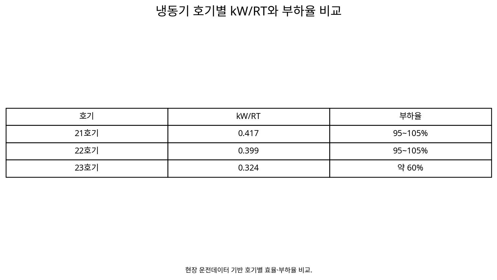

냉동기 부하율 분석 및 냉수밸브 조정을 통한
고효율 냉동기 고부하 운전 최적화
13℃ 냉동구간에서 호기별 kW/RT와 부하율을 비교한 결과, 가장 효율적인 냉동기가 오히려 낮은 부하율로 운전되는 현상을 발견하고 냉수펌프 토출밸브를 조정해 부하를 재분배한 뒤 System kW/RT로 효과를 검증한 현장 최적화 사례.
Chiller LoadkW/RTLoad BalancingValve AdjustmentSystem Optimization1. 고효율 냉동기를 켰다고 최적운전이 끝나는 것은 아니다
냉동기별 효율을 비교해 가장 좋은 호기를 우선 가동하더라도 그 냉동기에 충분한 부하가 배분되지 않으면 Plant 전체 효율은 최적이 아닐 수 있다.
2. 이론적 배경 — 냉동기 효율은 부하율에 따라 일정하지 않다
냉동기의 kW/RT 또는 COP는 정격용량 하나로 고정되는 값이 아니다. Compressor 형식, VFD 여부, 냉수·냉각수온도와 Lift에 따라 Part-load Efficiency Curve가 달라진다. 따라서 ‘고부하가 항상 좋다’ 또는 ‘부분부하가 항상 좋다’는 하나의 규칙으로 모든 냉동기를 설명할 수 없다.
특히 Variable-speed Centrifugal Chiller는 낮은 Lift 조건에서 부분부하 효율이 매우 좋아질 수 있는 반면, Fixed-speed Chiller나 Dedicated Pump 구조에서는 추가 냉동기와 Pump를 기동하는 순간 Auxiliary Power가 증가하여 적은 수의 냉동기를 상대적으로 높은 부하로 운전하는 편이 유리할 수도 있다.
3. 기술동향 — Chiller Sequencing에서 Chiller Load Dispatch로
전통적인 Lead/Lag 제어는 정해진 순서로 냉동기를 추가·정지했다. 최근 Central Plant 최적화는 현재 부하에서 가능한 Chiller 조합을 비교한 뒤, 온라인 상태인 각 냉동기에 얼마의 RT를 배분할 것인지까지 함께 판단하는 방향으로 발전하고 있다.
ASHRAE의 다중 냉동기 최적화 이론도 성능특성이 다른 냉동기라면 각 호기의 Part-load 특성을 고려해 전체 소비전력이 최소가 되도록 부하를 분배해야 한다고 설명한다. 즉 CASE63의 현장 밸브조정은 오늘날의 Optimal Chiller Load Distribution을 현장에서 Test & Adjust 방식으로 구현한 사례로 해석할 수 있다.
4. 실제 현장에서는 고효율 호기가 가장 낮은 부하율로 운전되고 있었다
13℃ 냉동구간에는 3대가 가동되고 있었고 호기별 원단위와 부하율 차이가 발생했다. 완료자료의 비교표는 다음과 같다.
| 구분 | 21호기 | 22호기 | 23호기 |
|---|---|---|---|
| 원단위 (kW/RT) | 0.417 | 0.399 | 0.324 |
| 운전 부하율 | 105% | 95% | 60% |
즉 원단위가 가장 좋은 23호기는 약 60% 부하로 운전되는 반면 상대적으로 원단위가 높은 21·22호기는 95~105% 수준이었다. 여기서 ‘호기선택’보다 한 단계 더 들어간 Load Balancing 문제가 드러났다.
5. 문제를 ‘기기효율’이 아니라 ‘부하배분’으로 다시 정의했다
처음에는 냉동기별 kW/RT 차이를 보면 저효율 호기를 줄이고 고효율 호기를 우선 운전하면 된다고 생각할 수 있다. 하지만 고효율 호기가 이미 가동 중인데도 Plant 효율이 충분히 좋아지지 않는다면 다음 질문이 필요하다.
“왜 가장 효율적인 냉동기에 부하가 충분히 실리지 않는가?”
이를 확인하려면 냉동기별 냉수유량, 공급·환수온도, 실제 RT와 냉수계통의 밸브·유량분배 상태를 함께 봐야 한다.
6. 냉동기별 실제 RT를 계산해 부하가 어디로 가는지 확인한다
냉수유량과 공급·환수온도차를 이용해 각 냉동기가 실제로 담당하는 RT를 계산한다. 단순한 기동상태가 아니라 각 호기가 Plant Load의 몇 %를 실제로 담당하는가를 확인한다.
Flow
ΔT
7. 부하분배의 조정수단은 냉수펌프 토출밸브였다
완료자료에서는 개선방안으로 “냉수펌프 토출 V/V 개도율 변화로 부하율 조정”을 명시했다. 냉수유량의 분배를 조정하여 고효율 냉동기가 더 많은 냉동부하를 담당하도록 한 것이다.
이것은 단순히 밸브를 잠가 Pump Power를 줄이는 조치가 아니라, 여러 냉동기 사이의 Load Allocation을 바꾸기 위한 Test & Adjust였다.
8. 밸브조정은 작은 단계로 수행하고 시스템을 안정화한다
유량분배를 급격히 바꾸면 냉수 공급온도, ΔT와 각 Chiller의 부하가 동시에 변할 수 있다. 따라서 Baseline을 확보한 뒤 밸브 개도를 단계적으로 조정하고 안정화 후 각 호기의 RT·kW·kW/RT를 다시 측정한다.
동시에 생산·공조 측 요구 냉수조건이 정상적으로 유지되는지 확인한다.
9. 개별 냉동기 효율만 보면 결과를 잘못 해석할 수 있다
완료자료에는 “기기별 판단시 효율이 낮아진 것으로 보이나 시스템(전체 가동냉동기 대비 전력량)에서 판단”해야 한다는 설명이 남아 있다.
부하를 한 호기로 이동하면 각 기기의 부하율과 kW/RT가 함께 바뀌므로 최종 평가는 전체 가동냉동기의 합산전력과 총 RT로 계산한 System kW/RT를 사용해야 한다.
10. System kW/RT는 0.594에서 0.556으로 개선되었다
kW/RT
kW/RT
kW/RT
완료보고서는 이 개선폭을 13℃ 냉방부하 5,200 RT/h에 적용하여 약 197.6 kW의 시스템 전력저감으로 산정했다.
11. 완료보고서의 연간 절감효과는 1.02억원/년이었다
보고서의 산정식은 원단위 절감량 0.038 kW/RT × 13℃ 구간 냉방부하 5,200 RT × 연간 가동시간 8,760 h × 당시 전력단가 59.4원을 적용해 약 102백만원/년, 즉 1.02억원/년으로 계산했다.
0.594 → 0.556 kW/RT, 0.038 kW/RT 개선, 197.6 kW 및 1.02억원/년은 완료보고서에 제시된 CASE63 관련 성과다. 연간금액은 당시 가동시간·전력단가와 평가조건에 따른 프로젝트 값이다.
12. 고부하 운전은 ‘무조건 100%’를 의미하지 않는다
고효율 냉동기에 부하를 집중한다고 해서 모든 냉동기를 항상 최대부하로 운전하는 것이 목적은 아니다. Chiller Type과 Compressor 특성에 따라 Part-load Efficiency Curve가 다르고, 제조사 허용범위와 안정운전조건도 지켜야 한다.
따라서 목표는 가장 효율적인 호기·부하조합에서 Plant 전체 kW/RT가 최소가 되는 지점이다.
13. 밸브 Throttling 자체의 손실도 장기적으로는 검토해야 한다
현장 Test에서 밸브는 빠르게 부하분배를 변경할 수 있는 유용한 조정수단이다. 그러나 밸브를 과도하게 조여 장기간 유량을 제어하면 불필요한 압력손실이 생길 수 있다.
따라서 최적 부하분배가 확인된 뒤에는 Pump Speed, Header 차압, 자동밸브 로직과 배관 Balance를 함께 검토하여 같은 Load Allocation을 더 낮은 반송동력으로 구현하는 것이 다음 단계다.
14. 호기선택과 Load Allocation은 동시에 최적화해야 한다
CASE56에서는 어떤 냉동기가 효율적인지를 교체운전으로 확인했다. CASE63은 그 다음 단계로, 선택된 고효율 냉동기에 실제 부하를 어떻게 배분할 것인가를 다룬다.
효율
선택
분석
Allocation
kW/RT
15. 22단계 현장 분석·Test Process
① 호기별 운전데이터 → ② kW/RT → ③ 고효율 호기 식별 → ④ 우선운전 검토 → ⑤ 기대효과 미달 확인 → ⑥ 부하율 추가분석 → ⑦ 고효율 호기 저부하 확인 → ⑧ 원인 질문 → ⑨ 냉수유량·온도 → ⑩ 실제 RT → ⑪ Load Balance → ⑫ 밸브·유량분배 → ⑬ 고효율 호기 부하집중 가설 → ⑭ 토출밸브 조정 → ⑮ 안정화·재측정 → ⑯ 부하율 변화 → ⑰ 고부하 운전조건 → ⑱ 타 호기 영향 → ⑲ kW/RT 재계산 → ⑳ System kW/RT → ㉑ 생산·냉방조건 확인 → ㉒ 최적 Load Balance 기준
16. 병렬 냉동기의 최적부하배분은 ‘효율 좋은 호기에 몰아주기’보다 정교하다
서로 성능이 비슷한 냉동기라면 동일한 Part-load Ratio로 운전하는 방식이 근사 최적해가 될 수 있지만, 연식·Maker·용량·Compressor Type이 다른 Plant에서는 각 냉동기의 효율곡선이 다르므로 동일부하율이 최적이라고 볼 수 없다.
이론적으로는 한 호기에 부하를 조금 더 배분했을 때 증가하는 전력과 다른 호기에서 같은 부하를 줄였을 때 감소하는 전력을 비교하여, 더 이상 부하이동으로 전체전력을 줄일 수 없는 지점을 찾는다. 실무에서는 호기별 실측 Performance Curve 또는 제조사 성능자료를 이용해 가능한 Load Allocation을 계산한다.
17. 가동대수와 부하배분은 하나의 문제로 계산해야 한다
총 5,000 RT가 필요하다고 할 때 ‘2대를 돌릴지 3대를 돌릴지’와 ‘각 호기에 몇 RT를 배분할지’를 따로 결정하면 전체 최적점을 놓칠 수 있다. 추가 냉동기를 켜면 각 Chiller의 Part-load 효율은 좋아질 수 있지만 전용 Pump가 함께 기동한다면 Pump Power가 증가한다.
ASHRAE도 Variable-speed Chiller는 여러 대를 낮은 부하로 운전하는 것이 유리한 경우가 있는 반면, Constant-speed 또는 Dedicated Pump Plant에서는 한 대를 충분히 Loading한 뒤 다음 호기를 기동하는 편이 유리할 수 있다고 설명한다. 따라서 Staging × Load Dispatch × Pumping을 함께 평가한다.
18. 데이터센터·병원·대형건물에서는 부하변동 때문에 자동 Dispatch의 가치가 커진다
데이터센터처럼 24시간 냉방부하가 존재하는 시설, 병원처럼 신뢰성과 Redundancy가 중요한 시설, 대형 오피스처럼 일중·계절 부하변동이 큰 건물에서는 최적 Chiller 조합이 시간에 따라 달라질 수 있다.
따라서 고정된 ‘1호기 → 2호기 → 3호기’ 순서보다 현재 Plant RT, 외기·냉각수조건, 각 Chiller의 효율곡선과 가용상태를 이용하여 현재 조건에서 가장 낮은 Plant kW/RT를 만드는 조합과 부하배분을 선택하는 방식이 유리할 수 있다.
19. 설계단계에서도 Load Profile과 Chiller 조합을 함께 검토할 수 있다
ASHRAE의 Central Plant 설계자료는 여러 대의 Chiller를 사용하면 넓은 부하범위에서 Staging이 가능하지만, 실제 예상 Load Profile이 1대·2대·3대 운전구간과 잘 맞는지를 설계단계에서 확인해야 한다고 설명한다.
따라서 CASE63의 사고방식은 기존 Plant의 운전개선뿐 아니라 신규공장의 Chiller Capacity 분할, 서로 다른 용량의 Chiller 조합, VFD 적용과 N+1 Redundancy를 결정하는 설계검토에도 활용할 수 있다.
20. AI Optimal Load Dispatch는 ‘예측’과 ‘최적화’를 결합한다
AI 또는 데이터 기반 모델은 각 Chiller에 대해 현재 냉수·냉각수조건과 부하율에서 예상되는 kW를 예측할 수 있다. 그 다음 Optimization Layer가 가능한 가동조합과 RT 배분을 계산하여 전체 Plant Power가 가장 낮은 조합을 찾는다.
Forecast
Model
Load Allocation
Optimization
Dispatch
여기에 최소·최대 유량, 최소 운전시간, Start/Stop 횟수, Redundancy, 냉수 공급온도와 설비 가용상태를 제약조건으로 넣으면 단순한 효율 Ranking보다 실제 운영에 가까운 최적화가 된다.
21. AI가 판단하더라도 운영자가 이해할 수 있는 근거가 필요하다
최적화 시스템이 ‘23호기 85%, 22호기 70%’ 같은 명령만 제시하면 현장 적용성이 떨어질 수 있다. 현재 RT, 예상 호기별 kW/RT, 기존 운전 대비 예상 Plant kW 차이와 제약조건을 함께 표시하면 운영자가 제어결과를 검토할 수 있다.
따라서 AI Optimal Load Dispatch는 완전한 Black Box보다 예측값 + 선택근거 + 예상절감 + 안전제약을 함께 제공하는 Decision Support 구조로 시작하는 것이 현실적이다.
22. 확대응용 — 여러 대의 병렬 냉동기 Plant에 적용한다
동일·유사 용량의 냉동기가 여러 대 병렬운전되는 제조공장, 데이터센터, 병원과 대형 상업건물에 적용할 수 있다. 특히 Chiller별 연식·Maker·Compressor Type이 달라 효율곡선 차이가 큰 Plant에서는 부하배분의 영향이 커질 수 있다.
다만 특정 호기의 60%→90% 같은 부하율을 다른 현장에 그대로 적용하지 않고 각 Chiller의 Part-load Curve와 시스템 제약조건을 다시 확인해야 한다.
23. 실시간 최적제어로 확장하기 위한 데이터 준비
실시간 Dispatch로 발전시키려면 현재 RT, 호기별 kW/RT Curve, 냉수유량, ΔT, 냉각수조건, Pump Power와 각 설비의 운전가능 상태를 신뢰성 있게 축적해야 한다.
Efficiency Curve
Scenario
예측
Load Dispatch
현장에서는 먼저 권고값을 제시하는 Advisory Mode로 검증한 뒤, 충분한 M&V와 안전검증을 거쳐 자동 Sequencing·Load Dispatch로 단계적으로 확대하는 것이 적절하다.
데이터와 분석 시각화

24. Evidence & Measurement Boundary
13℃ 냉동구간 3대의 원단위·부하율 차이, 냉수펌프 토출 V/V를 이용한 부하율 조정, System kW/RT 0.594→0.556, 0.038 kW/RT 개선, 197.6 kW 및 1.02억원/년 절감은 완료보고서에 제시되어 있다.
다만 개별 호기의 부하율 목표나 절감금액은 당시 냉동기 구성, 5,200 RT 부하, 연 8,760시간과 59.4원/kWh 전력단가를 전제로 한 프로젝트 결과다. 다른 현장에는 동일 숫자를 적용하지 않는다.
25. Review 상태
Status: APPROVED / FINAL-LOCK